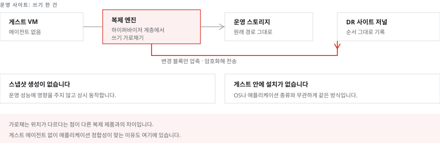

게스트 운영체제에는 어떤 구성요소도 설치하지 않습니다
각 호스트에 배치된 복제 엔진이 하이퍼바이저를 지나는 쓰기를 스토리지에 도달하기 전에 가로챕니다. 게스트 운영체제에 에이전트를 설치하지 않으므로 운영체제나 애플리케이션 종류와 무관하게 동작하며, 스냅샷을 생성하지 않아 운영 성능에 영향을 주지 않습니다.

소프트웍스가 하는 일
호스트별 복제 엔진의 자원 배분과 배치를 설계합니다. 쓰기를 가로채는 위치가 다른 복제 제품과 다르므로, 기존 방식과의 비교 검토가 필요한 경우 이 구조를 근거로 설명합니다.